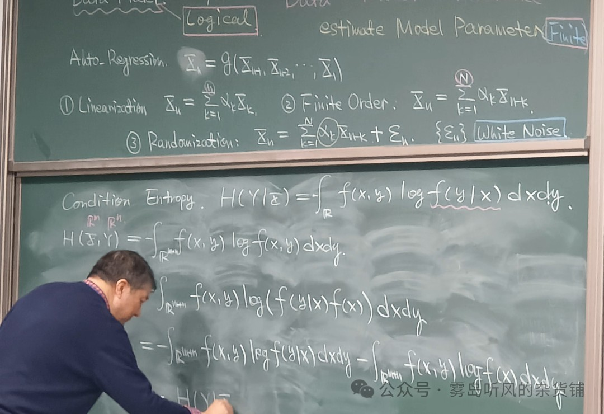
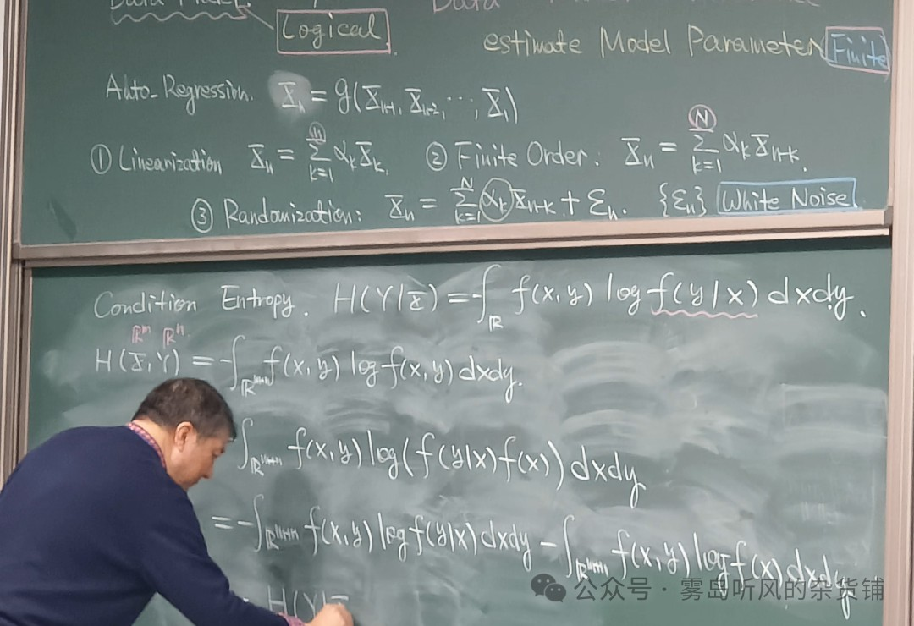

4th Post

Oct
后退原来是向前
后退原来是向前
中科大的张颢老师，在现代数字信号处理课上，说的这一番话，在网上火出了圈，把晦涩难懂的“卡尔曼滤波”，结合一首诗，结合马哲中的辩证思想，将其升华到了人生哲理。怀着敬佩的心情，写下了这篇公众号。将张颢老师所说，结合之前听徐涛老师讲的考研政治中关于“否定之否定”的内容，简单进行了总结，也没被这种理科和文科，数学公式与马哲思想之间的碰撞之美，深深地震撼到了。
 

最优的向前滤波，一定是包含有最优的向后滤波。
无所谓，有的时候你可能觉得没有跟上时代的脚步，有的时候可能觉得并没有很顺畅的前进，这个东西不重要，因为前进和后退是辩证的，只要向前看就可以了。
手把青秧插满田，
低头便见水中天。
六根清净方为道，
退步原来是向前。
我用这首诗和大家共勉，后退原来是向前。我们无论在什么时候，都不要丧失对自己的信心，无论你遇到多大的困难，无论你遇到多大的挑战，无论你遇到多大的挫折。你总觉得你在原地踏步，你总觉得你并没有在前进，但实际上你是在积聚力量，因为最好的前进，一定是由后退来推动。就像我们今天所讲，你最优的向前滤波，一定是包含有，最优的向后滤波。后退原来是向前！
卡尔曼滤波，递归向前。你以为误差很大很糟糕，实际上每一步都是依托原来的滤波进行再次滤波。这就是马哲中的否定之否定。你以为这是差的一步，实际上是曲折向上，肯定，否定，再到否定之否定，测量数据也是上下曲折，但是经过卡尔曼滤波变得平滑精确。最优的向前滤波一定包含最优的向后滤波。
事物的辩证发展过程要经历一次否定，使矛盾得到初步的解决，而处于否定阶段的事物，仍然还具有片面性，还需要经过再次的否定及否定之否定，实现对立面的统一，使矛盾得到解决。事物的辩证发展就是这样，要经过两次否定，三个阶段，即：肯定、否定、否定之否定，形成一个周期。其中，否定之否定阶段，仿佛是向原来出发点的回复，但这是在更高阶段的回复，是扬气的结果，事物的发展就呈现出这样的周期性，上一个周期下一个周期无限交替，使事物的发展，呈现波浪式的前进，和螺旋式上升的总趋势。
曾经，我看山是山，看水是水
后来，我看山不是山，看水不是水
如今，我看山还是山，看水还是水
辩证法告诉了你，曲折就在前边等着你，万事万物都是迂回前进的，不可能没有挫折，前面的曲折坎坷就在等着你。
人生三个境界：
1️⃣第一境界：看山是山、看水是水。年少时简单单纯、对新鲜事物好奇心强、比较容易相信、相信"眼见为实"，认为眼睛看到的东西就是真实的。
2️⃣第二境界：看山不是山、看水不是水。随着年龄增长、经历的世事渐多、遇到无数的困难和挫折、遭到了社会的毒打、见识了江湖的险恶发现这个世界越来越复杂、世界的颜色根本不是简简单单的黑与白、好与坏。开始逐渐了解到人生的深意、这时看山也感慨、看水也叹息、不愿意再轻易地相信什么。
3️⃣第三境界：看山还是山、看水还是水。人对世间万物的认识、是在实践的过程中逐步深刻化的。有些人经过漫长曲折的探索苦修后发现、人生的最高境界不过是返璞归真、看山还是山、看水还是水。
当你坚持不下去的时候，就回来看看吧，请记住，后退原来是向前！